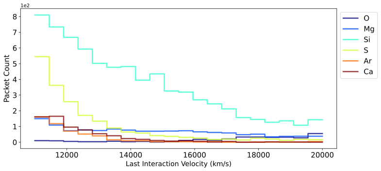
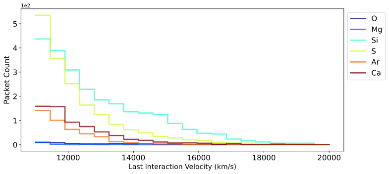
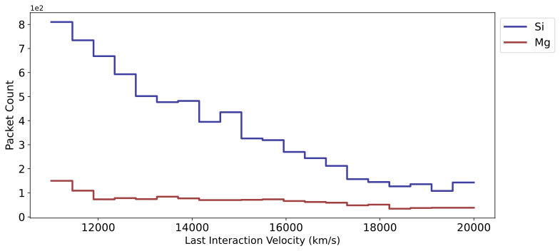
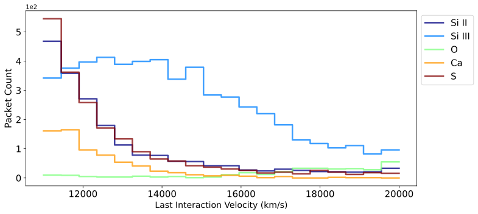
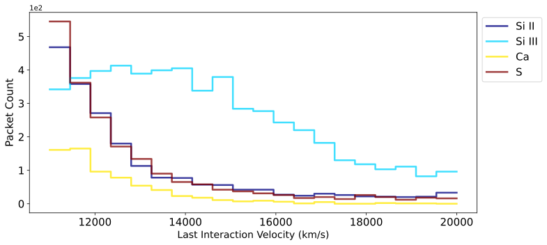
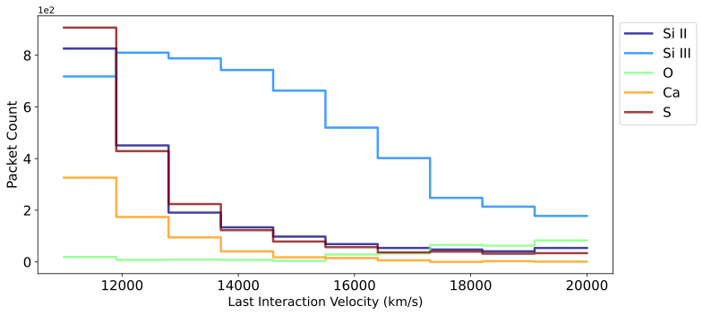
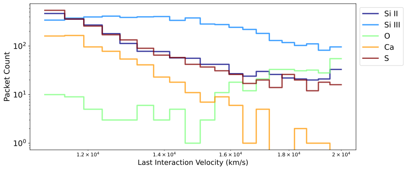
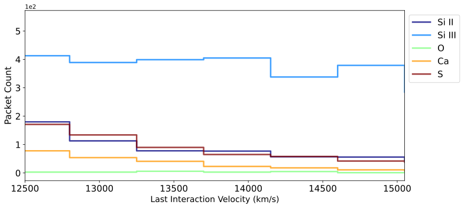

You can interact with this notebook online: Launch notebook
How to Generate a Last Interaction Velocity (LIV) Plot¶
The Last Interaction Velocity Plot tracks and display the velocities at which different elements (or species) last interacted with packets in the simulation.
First, create and run a simulation for which you want to generate this plot:
[1]:
from tardis import run_tardis
from tardis.io.atom_data import download_atom_data
from tardis.io.configuration.config_reader import Configuration
# We download the atomic data needed to run the simulation
download_atom_data('kurucz_cd23_chianti_H_He_latest')
config = Configuration.from_yaml(str("tardis_example.yml"))
config.montecarlo.tracking.track_rpacket = True
sim = run_tardis(config, virtual_packet_logging=True)
Atomic Data kurucz_cd23_chianti_H_He_latest already exists in /home/runner/Downloads/tardis-data/kurucz_cd23_chianti_H_He_latest.h5. Will not download - override with force_download=True.
Auto-detected Sphinx build environment
Auto-detected Sphinx build environment
Initializing tabulator and plotly panel extensions for widgets to work
Embedding the final state for Jupyter environments
Note
The virtual packet logging capability must be active in order to produce the Last Interaction Velocity Plot for virtual packets population. Thus, make sure to set virtual_packet_logging: True in your configuration file if you want to generate the Last Interaction Velocity Plot with virtual packets. It should be added under the virtual property of the spectrum property, as described in the configuration
schema.
Now, import the plotting interface for Last Interaction Velocity Plot, i.e. the LIVPlotter class.
[2]:
from tardis.visualization.tools.liv_plot import LIVPlotter
And create a plotter object to process the data of simulation object sim for generating the Last Interaction Velocity plot.
[3]:
plotter = LIVPlotter.from_simulation(sim)
Static Plot (in matplotlib)¶
You can now call the generate_plot_mpl() method on your plotter object to create a highly informative and visually appealing Last Interaction Velocity plot using matplotlib.
Virtual packets mode¶
By default, a Last Interaction Velocity plot is produced for the virtual packet population of the simulation.
[4]:
plotter.generate_plot_mpl()
[4]:
<Axes: xlabel='Last Interaction Velocity (km/s)', ylabel='Packet Count'>

Real packets mode¶
[5]:
plotter.generate_plot_mpl()
[5]:
<Axes: xlabel='Last Interaction Velocity (km/s)', ylabel='Packet Count'>
Plotting a specific wavelength range¶
You can also restrict the wavelength range of escaped packets that you want to plot by specifying packet_wvl_range. It should be a quantity in Angstroms, containing two values - lower lambda and upper lambda i.e. [lower_lambda, upper_lambda] * u.AA.
[6]:
from astropy import units as u
[7]:
plotter.generate_plot_mpl(packet_wvl_range=[3000, 9000] * u.AA)
[tardis.visualization.tools.liv_plot][INFO ] ['O III', 'Si IV', 'S IV', 'Ar III'] were not found in the provided wavelength range. (liv_plot.py:254)
[7]:
<Axes: xlabel='Last Interaction Velocity (km/s)', ylabel='Packet Count'>

Plotting only the top contributing elements¶
The nelements option allows you to plot the top contributing elements to the spectrum. Only the top elements are shown in the plot. Please note this works only for elements and not for ions.
[8]:
plotter.generate_plot_mpl(nelements=3)
[8]:
<Axes: xlabel='Last Interaction Velocity (km/s)', ylabel='Packet Count'>

Choosing what elements/ions to plot¶
You can pass a species_list for the species you want plotted in the Last Interaction Velocity Plot. Valid options include elements (e.g., Si), ions (specified in Roman numeral format, e.g., Si II), a range of ions (e.g., Si I-III), or any combination of these.
[9]:
plotter.generate_plot_mpl(species_list = ["Si I-III", "O", "Ca", "S"])
[9]:
<Axes: xlabel='Last Interaction Velocity (km/s)', ylabel='Packet Count'>

When using both the nelements and the species_list options, species_list takes precedence.
[10]:
plotter.generate_plot_mpl(species_list = ["Si I-III", "Ca", "S"], nelements=3)
[tardis.visualization.tools.liv_plot][INFO ] Both nelements and species_list were requested. Species_list takes priority; nelements is ignored (liv_plot.py:429)
[10]:
<Axes: xlabel='Last Interaction Velocity (km/s)', ylabel='Packet Count'>

Plotting a specific number of bins¶
You can regroup the bins with broader widths within the same velocity range using num_bins.
[11]:
plotter.generate_plot_mpl(species_list = ["Si I-III", "O", "Ca", "S"], num_bins=10)
[11]:
<Axes: xlabel='Last Interaction Velocity (km/s)', ylabel='Packet Count'>

Plotting on the Log Scale¶
You can plot on the log scale on x-axis using xlog_scale=True and on y-axis using ylog_scale=True by default both are set to False which plots on a linear scale.
[12]:
plotter.generate_plot_mpl(species_list = ["Si I-III", "O", "Ca", "S"], xlog_scale=True, ylog_scale=True)
[12]:
<Axes: xlabel='Last Interaction Velocity (km/s)', ylabel='Packet Count'>

Plotting a specific velocity range¶
You can restrict the range of bins to plot in the Last Interaction Velocity Plot by specifying a valid velocity_range.
[13]:
plotter.generate_plot_mpl(species_list = ["Si I-III", "O", "Ca", "S"], velocity_range=(12500, 15050))
[13]:
<Axes: xlabel='Last Interaction Velocity (km/s)', ylabel='Packet Count'>

Additional plotting options¶
[14]:
# To list all available options (or parameters) with their description
help(plotter.generate_plot_mpl)
Help on method generate_plot_mpl in module tardis.visualization.tools.liv_plot:
generate_plot_mpl(
species_list=None,
nelements=None,
packet_wvl_range=None,
packets_mode=None,
ax=None,
figsize=(11, 5),
cmapname='jet',
xlog_scale=False,
ylog_scale=False,
num_bins=None,
velocity_range=None
) method of tardis.visualization.tools.liv_plot.LIVPlotter instance
Generate the last interaction velocity distribution plot using matplotlib.
Parameters
----------
species_list : list of str, optional
List of species to plot. Default is None which plots all species in the model.
nelements : int, optional
Number of elements to include in plot. The most interacting elements are included. If None, displays all elements.
packet_wvl_range : astropy.Quantity
Wavelength range to restrict the analysis of escaped packets. It
should be a quantity having units of Angstrom, containing two
values - lower lambda and upper lambda i.e.
[lower_lambda, upper_lambda] * u.AA
ax : matplotlib.axes.Axes, optional
Axes object to plot on. If None, creates a new figure.
figsize : tuple, optional
Size of the figure. Default is (11, 5).
cmapname : str, optional
Colormap name. Default is 'jet'. A specific colormap can be chosen, such as "jet", "viridis", "plasma", etc.
xlog_scale : bool, optional
If True, x-axis is scaled logarithmically. Default is False.
ylog_scale : bool, optional
If True, y-axis is scaled logarithmically. Default is False.
num_bins : int, optional
Number of bins for regrouping within the same range. Default is None.
velocity_range : tuple, optional
Limits for the x-axis. If specified, overrides any automatically determined limits.
Returns
-------
matplotlib.axes.Axes
Axes object with the plot.
The generate_plot_mpl method also has options specific to the matplotlib API, thereby providing you with more control over how your last interaction velocity looks. Possible cases where you may use them are:
ax: To plot on an Axis of a plot you’re already working with, e.g. for subplots.figsize: To resize the plot as per your requirements.cmapname: To use a colormap of your preference, instead of “jet”.
Interactive Plot (in plotly)¶
If you’re using the Last Interaction Velocity plot for exploration, consider creating an interactive version with generate_plot_ply(). This allows you to zoom, pan, inspect data values by hovering, resize the scale, and more conveniently.
This method takes the same arguments as ``generate_plot_mpl`` except for a few specific to the Plotly library. You can produce all the plots shown above in Plotly by passing the same arguments.
Virtual packets mode¶
By default, a Last Interaction Velocity plot is produced for the virtual packet population of the simulation.
[15]:
plotter.generate_plot_ply()
Real packets mode¶
[16]:
plotter.generate_plot_ply()
Plotting a specific wavelength range¶
You can also restrict the wavelength range of escaped packets that you want to plot by specifying packet_wvl_range. It should be a quantity in Angstroms, containing two values - lower lambda and upper lambda i.e. [lower_lambda, upper_lambda] * u.AA.
[17]:
from astropy import units as u
[18]:
plotter.generate_plot_ply(packet_wvl_range=[3000, 9000] * u.AA)
[tardis.visualization.tools.liv_plot][INFO ] ['O III', 'Si IV', 'S IV', 'Ar III'] were not found in the provided wavelength range. (liv_plot.py:254)
Plotting only the top contributing elements¶
The nelements option allows you to plot the top contributing elements to the spectrum. Only the top elements are shown in the plot. Please note this works only for elements and not for ions.
[19]:
plotter.generate_plot_ply(nelements=10)
Choosing what elements/ions to plot¶
You can pass a species_list for the species you want plotted in the Last Interaction Velocity Plot. Valid options include elements (e.g., Si), ions (specified in Roman numeral format, e.g., Si II), a range of ions (e.g., Si I-III), or any combination of these.
[20]:
plotter.generate_plot_ply(species_list = ["Si I-III", "Ca", "S"])
When using both the nelements and the species_list options, species_list takes precedence.
[21]:
plotter.generate_plot_ply(species_list = ["Si I-III", "Ca", "S"], nelements=3)
[tardis.visualization.tools.liv_plot][INFO ] Both nelements and species_list were requested. Species_list takes priority; nelements is ignored (liv_plot.py:529)
Plotting a specific number of bins¶
You can regroup the bins with broader widths within the same velocity range using num_bins.
[22]:
plotter.generate_plot_ply(species_list = ["Si I-III", "Ca", "S"], num_bins=10)
Plotting on the Log Scale¶
You can plot on the log scale on x-axis using xlog_scale=True and on y-axis using ylog_scale=True by default both are set to False.
[23]:
plotter.generate_plot_ply(species_list = ["Si I-III", "Ca", "S"], xlog_scale=True, ylog_scale=True)
Plotting a specific velocity range¶
You can restrict the range of bins to plot in the Last Interaction Velocity Plot by specifying a valid velocity_range.
[24]:
plotter.generate_plot_ply(species_list = ["Si I-III", "Ca", "S"], velocity_range=(12500, 15050))
Additional plotting options¶
[25]:
# To list all available options (or parameters) with their description
help(plotter.generate_plot_ply)
Help on method generate_plot_ply in module tardis.visualization.tools.liv_plot:
generate_plot_ply(
species_list=None,
nelements=None,
packets_mode=None,
packet_wvl_range=None,
fig=None,
graph_height=600,
cmapname='jet',
xlog_scale=False,
ylog_scale=False,
num_bins=None,
velocity_range=None
) method of tardis.visualization.tools.liv_plot.LIVPlotter instance
Generate the last interaction velocity distribution plot using plotly.
Parameters
----------
species_list : list of str, optional
List of species to plot. Default is None which plots all species in the model.
nelements : int, optional
Number of elements to include in plot. The most interacting elements are included. If None, displays all elements.
packet_wvl_range : astropy.Quantity
Wavelength range to restrict the analysis of escaped packets. It
should be a quantity having units of Angstrom, containing two
values - lower lambda and upper lambda i.e.
[lower_lambda, upper_lambda] * u.AA
fig : plotly.graph_objects.Figure, optional
Plotly figure object to add the plot to. If None, creates a new figure.
graph_height : int, optional
Height (in px) of the plotly graph to display. Default value is 600.
cmapname : str, optional
Colormap name. Default is 'jet'. A specific colormap can be chosen, such as "jet", "viridis", "plasma", etc.
xlog_scale : bool, optional
If True, x-axis is scaled logarithmically. Default is False.
ylog_scale : bool, optional
If True, y-axis is scaled logarithmically. Default is False.
num_bins : int, optional
Number of bins for regrouping within the same range. Default is None.
velocity_range : tuple, optional
Limits for the x-axis. If specified, overrides any automatically determined limits.
Returns
-------
plotly.graph_objects.Figure
Plotly figure object with the plot.
The generate_plot_ply method also has options specific to the plotly API, thereby providing you with more control over how your last interaction velocity plot looks. Possible cases where you may use them are:
fig: To plot the last interaction velocity plot on a figure you are already using e.g. for subplots.graph_height: To specify the height of the graph as needed.cmapname: To use a colormap of your preference instead of “jet”.
Using simulation saved as HDF¶
Other than producing the Last Interaction Velocity Plot for simulation objects in runtime, you can also produce it for saved TARDIS simulations.
[26]:
# hdf_plotter = LIVPlotter.from_hdf("demo.h5") ## Files is too large - just as an example
This hdf_plotter object is similar to the plotter object we used above, so you can use each plotting method demonstrated above with this too.
[27]:
# Static plot with virtual packets mode
# hdf_plotter.generate_plot_mpl()
[28]:
# Static plot
#hdf_plotter.generate_plot_mpl()
[29]:
# Interactive plot with virtual packets mode and specific list of species
# hdf_plotter.generate_plot_ply(species_list=["Si I-III", "Ca", "O", "S"])
[30]:
# Interactive plot with virtual packets mode and regrouped bins
# hdf_plotter.generate_plot_ply(num_bins=10)